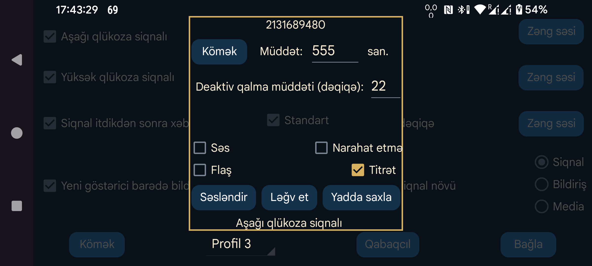

Siqnal və ya bildiriş üçün hansı səsin çalınacağını və bunun neçə saniyə davam edəcəyini seçin.
Deaktivlik (dəq.): Aşağı və ya yüksək qlükoza vəziyyəti davam etdikdə siqnal dərhal təkrar verilmir. Şərt hələ də qüvvədədirsə, siqnalın neçə dəqiqədən sonra yenidən veriləcəyini bu parametrlə təyin edə bilərsiniz.
Səs: Səsli xəbərdarlığı aktivləşdirir.
Standart: Standart səsdən istifadə edir.
Seç: Siqnal səsini seçin. Bəzi Samsung telefonlarında əvvəlcədən quraşdırılmış səs seçimi tətbiqi çökür. Belə hallarda digər tətbiqlərin də istifadə edə bildiyi alternativ səs seçimi tətbiqi quraşdırmaq lazım ola bilər. Məsələn: Ringo Ringtones və ya Ringtone Picker.
Titrəmə: Cihazı titrədir.
Narahat etməyin rejimini söndür: Narahat etməyin rejimi aktivdirsə, siqnal başlamazdan əvvəl onu söndürür. Bunun üçün Juggluco-ya tələb olunan icazə verilməyibsə, Android-in müvafiq icazə ekranı açılır. Bu rejimi aktivləşdirib Çal düyməsinə basmaqla xəbərdarlığın həmin rejimdə işləyib-işləmədiyini yoxlaya bilərsiniz.
Juggluco-nun köhnə versiyaları siqnal bitəndən sonra Narahat etməyin rejimini yenidən aktivləşdirirdi. Hazırkı versiya bunu etmir: avtomatik təyin edilmiş Narahat etməyin dövründə siqnal veriləndə əvvəlki davranış həmin rejimin nəzərdə tutulan vaxtda avtomatik sönməsinə mane olurdu. Bu rejimdə siqnalları eşitmək istəmirsinizsə, əvvəlki ekranda Siqnal növü bölməsindəki Siqnal seçimini də söndürməyiniz lazım gələ bilər.
Flaş: Flaş işığı olan telefonlarda siqnalın davam etdiyi saniyələr ərzində işığın yanıb-sönməsini təmin edir. Səsli siqnallara icazə verilməyən, lakin işıq xəbərdarlığının qadağan olunmadığı yerlərdə faydalı ola bilər.